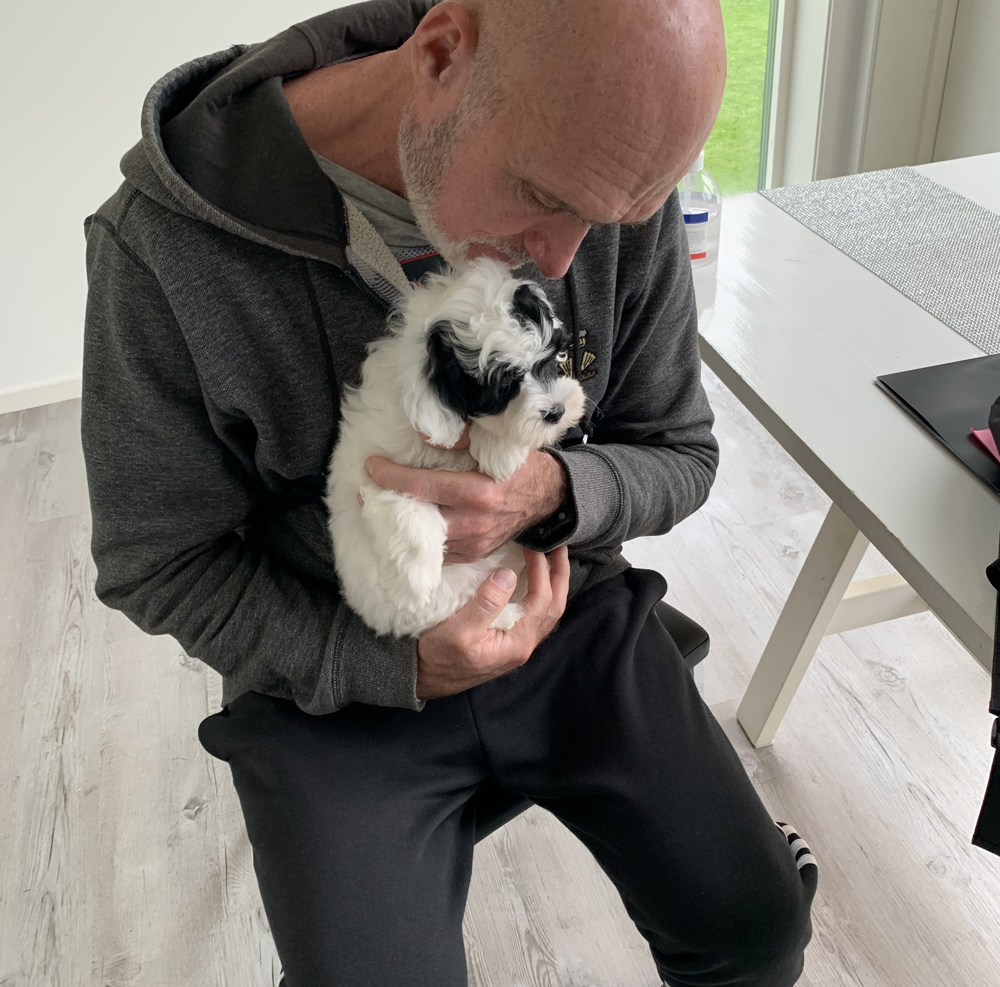
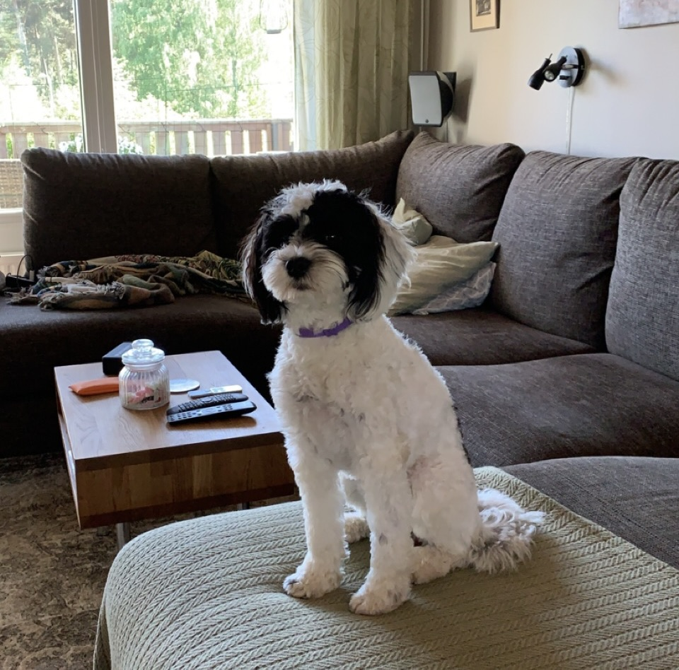
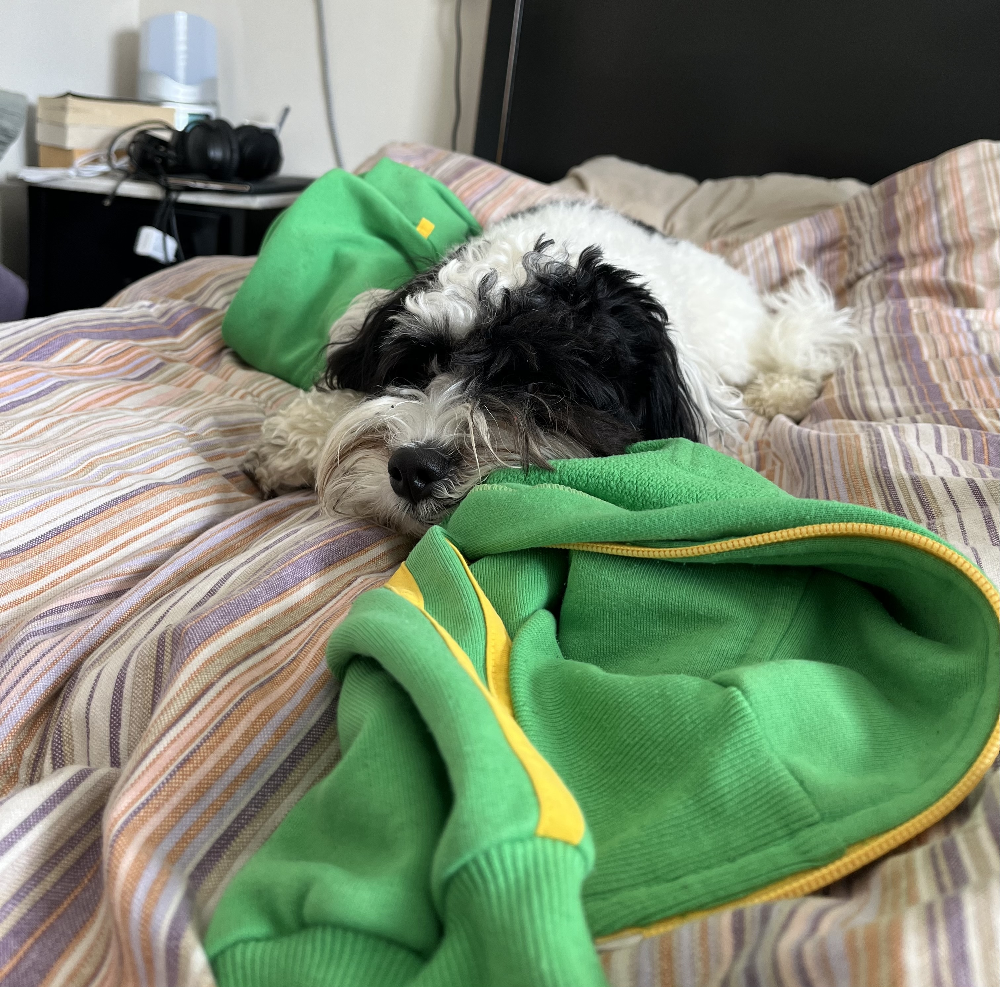
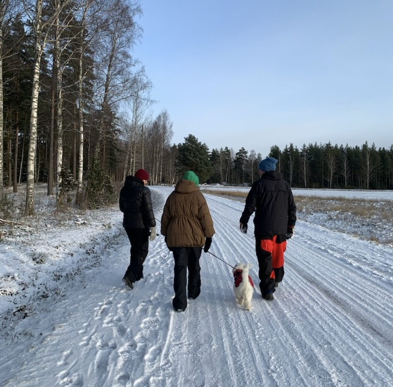

Välkommen hem
Nelly föddes den 1 juli 2021. Familjen Strand hämtade hem henne i augusti samma år.

Nelly föddes den 1 juli 2021. Familjen Strand hämtade hem henne i augusti samma år.

Nelly är en mini-Labradoodle, som är allergivänlig.

Det var kärlek vid första ögonkastet med bollen.

Inget slår husses kofta.

Nelly har alltid älskat en långpromenad i naturen.

Solsken gör en alltid glad.